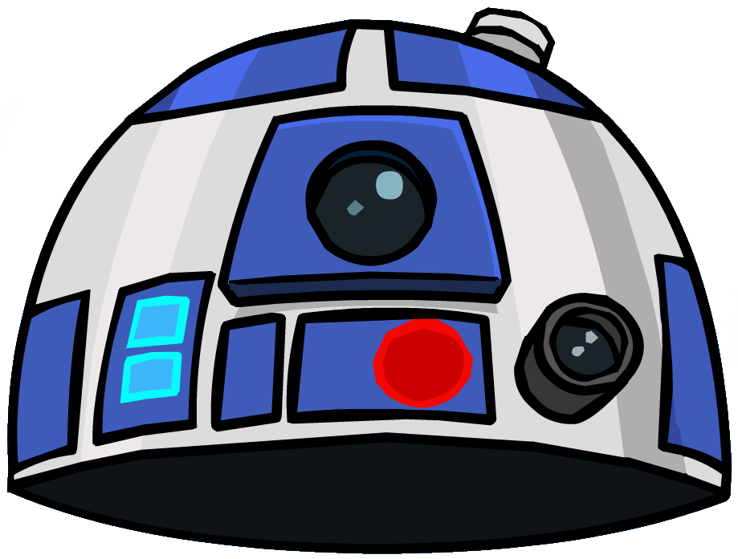

En la parte remota más alucinante de la Vía Láctea
Una combinación sutil entre estar lejos del estrés rutinario y la adrenalina extasiada por haber sobrevivido un día más en un ambiente tan hermoso como hostil.

Hay varias razones por las que quieras quedarte en este sitio.
Reconocimiento mundial por ser la primer ciudad.
Más allá de que ésta no sea la primer ciudad, es de las que aún conservan piezas arquitectónicas de mayor antigüedad y una variedad de especies animales, florales y arbóreas en peligro de extinción que se presentan en masa a lo largo y a lo ancho de estas tierras, además de contar con el último lago de agua dulce autoabasteciente de las montañas que vienen del sudoeste, suficiente para saciar la sed de 400 millones de personas por hora.
Combinación perfecta entre silencio, ruido y una mezcla de ambos.
Tanto para quienes disfrutan estar en silencio absoluto bajo un manto rodeado de los diversos ritmos melódicos que ofrece nuestros espacios verdes, las impactantes zonas de encuentro para disfrutar de una buena comida y conocer a tus siguientes compañeros de viaje y aventuras, o incluso adentrarse por las zonas más picantes codiciadas por creadores de contenido que buscan retratar los frecuentes conflictos vecinales entre el silencio comprado y los parlantes al 4500 de volumen.
Hay un lugar perfecto para cada tipo de persona en esta ciudad. Descúbrelo acá mismo.
Ciudad Naboo
Bajo una histórica imponente que a su vez la rodea por una enorme varidada de flora y fauna, encontrarás dentro de esta zona una mezcla armoniosa entre las creaciones más bellas de la naturaleza y una excéntrica convivencia entre el pasado y el futuro dentro de su zona céntrica.
Ciudad ficticia expone un nuevo salón en su biblioteca municipal para investigación sobre ciudades reales.
Esta biblioteca recibió un presupuesto millonario de $74 millones por parte del kiosquero de la esquina para el abastecimiento del lugar que previamente fue reacondicionado por los perros que merodean la avenida Calle al 700*8.
Asistencia multitudinaria a evento de verano para observar el nuevo arbusto en la vereda del Ecopunto.
"Muy frío, nunca ha habido un frío tanto frío con este año como este año tanto frío", menciona Doña Marta quien asistió a la jornada en medio del clima polar de 78 grados bajo cero.
Ha terminado la reparación del edificio histórico del fundador del pueblo.
La finca del fundador de la ciudad de 780.500,03 hectáreas ha sido exitosamente reinaugurada para el disfrute de la comunidad, la cuál cuenta con un museo ámplio de Ciudad Ficticia en su interior, su paso cuando fue Ciudad Real y Ciudad de mentira, e incluso un gran salón comedor con menúes económicos. El exterior cuenta con canchas de tenis, futbol, rugby, pato, polo, un ajedrez gigante, 36 canchas de paddle y una pileta de natación olímpica de 2 centímetros donada por Pelopincho.
Caótica reapertura del predio histórico: 2 muertos y 70 detenidos.
La finca del fundador tuvo que ser desalojada tras un incidente de seguridad derivada tras la queja de vecinos y visitantes por la poca cantidad de canchas de paddle inauguradas. A su vez, los fuegos artificiales del final del espectáculo fueron decomisados por el Gobierno Nacional y sujetos a descarte mediante una quema masiva en el descampado ubicado al lado del salón de té. Las explosiones se salieron de control.